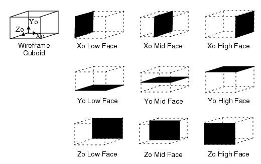
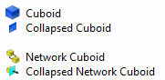
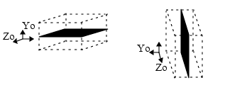

Cuboids and Network
Cuboids can be collapsed from their 3D default structures to 2D
planes. Collapsing to 2D increases the efficiency of modeling.
Procedure
- Select the Location tab
of the property sheet of the cuboid you want to collapse.
- Select one of the Collapse
options to specify the position of the plane.
Figure 1 shows the possible collapsed plane
positions.
Figure 1. Collapsed Planes
Results
The 3D cuboid becomes a 2D plane in
the drawing board.
Collapsed cuboids do not have resize
handles.
A collapsed Cuboid or Network Cuboid
has a different icon in the data tree, see Figure 2.
Figure 2. Collapsed Cuboid Icons
The collapse direction
is relative to the local coordinate system of the primitive, that
is, if you rotate the primitive, the collapse direction remains
the same, see Figure 3.
Figure 3. Collapsed Plane Before
and After Rotation